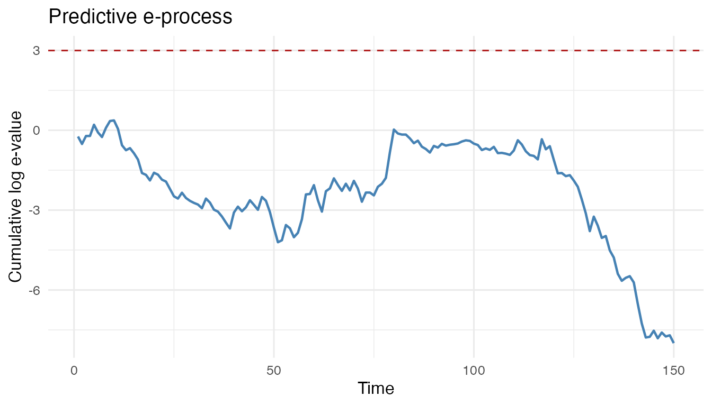

evalueHMM implements predictive e-diagnostics for hidden
Markov models of movement. The basic workflow is:
- define a fitted null movement HMM;
- define a diagnostic predictive alternative before validation;
- compute observable predictive log-densities under both models;
- accumulate the log-density ratios as a predictive e-process.
For a small reproducible example, simulate a trajectory from the built-in two-state movement HMM.
set.seed(20260522)
null_parameters <- create_hmm_movement_parameters()
validation_data <- simulate_hmm_movement(
n_times = 150,
parameters = null_parameters,
n_individuals = 1
)
head(validation_data)
#> individual_id time state step_length turning_angle
#> 1 1 1 1 0.1985733 0.1130060
#> 2 1 2 1 0.0690573 0.3733727
#> 3 1 3 1 0.9531939 2.8549178
#> 4 1 4 1 1.1724559 -0.7645248
#> 5 1 5 2 3.3467476 -0.1729120
#> 6 1 6 2 5.5539626 -0.2006085A diagnostic alternative can be any predictive density fixed before seeing the validation trajectory. Here we perturb the null parameters slightly.
diagnostic_parameters <- perturb_hmm_movement_parameters(
parameters = null_parameters,
step_mean_multiplier = c(1.10, 0.95),
angle_sd_multiplier = c(1.10, 1.20)
)
log_p0 <- hmm_movement_predictive_log_density(
data = validation_data,
parameters = null_parameters
)
log_q <- hmm_movement_predictive_log_density(
data = validation_data,
parameters = diagnostic_parameters
)The e-process is the cumulative product of the density ratios. On the
log scale, this is a cumulative sum of log_q - log_p0.
eprocess <- compute_eprocess(
log_p0 = log_p0,
log_p1 = log_q,
alpha = 0.05,
time = validation_data$time
)
summarise_predictive_diagnostic(
make_predictive_diagnostic(
diagnostic_name = "perturbed_null",
log_p0 = log_p0,
log_q = log_q,
time = validation_data$time
)
)
#> diagnostic_name alpha threshold signal crossing_time max_log_e final_log_e
#> 1 perturbed_null 0.05 2.995732 FALSE NA 0.370166 -7.996592
#> mean_log_increment n_observations
#> 1 -0.05331061 150
plot_eprocess(eprocess)
The dashed line is log(1 / alpha). Crossing this
threshold is evidence against the fitted null generator in the
anytime-valid predictive sense described in the manuscript.